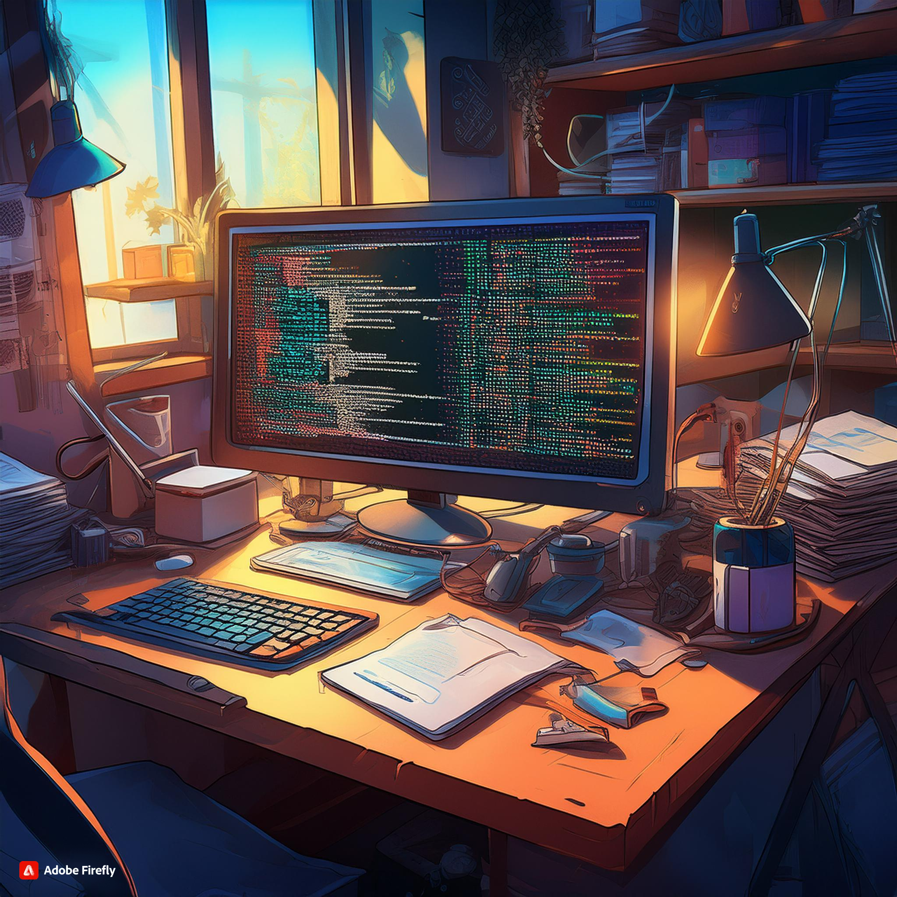

Git-ting Started: Version Control for the Chronically Disorganized

As someone who once lost an entire wetsuit in a studio apartment (don't ask), I understand the struggles of the organizationally challenged. But fear not, fellow chaos enthusiasts! Today, we're diving into the world of Git, a version control system that's about to become your new best friend – or at least, the friend who always remembers where you left your keys.
What is Git? Think Digital Time Machine
Git is a version control system, which is a fancy way of saying it's like a time machine for your code (or any text-based projects, really). Imagine if you could save a snapshot of your work at any point, then jump back to that exact moment whenever you wanted. That's Git in a nutshell.
It's like having a magic "undo" button for life. Accidentally deleted half your thesis? Git's got your back. Wish you could return to a time before you tried to give yourself bangs? Well, Git can't help with that, but maybe it'll inspire you to take more before-and-after photos.
Repositories: Your Project's Home Sweet Home
In Git, your project lives in a "repository" (or "repo" for short). Think of it as a super-smart folder that not only stores your files but also remembers every change you've ever made. It's like that friend who always remembers your embarrassing stories, but way more useful.
Commits: Snapshots in Time
When you make changes to your project and want to save them, you make a "commit". This is like taking a snapshot of your project at that moment in time. Each commit comes with a message where you explain what changes you made.
Pro tip: "Made some changes" is not a helpful commit message. "Fixed the bug where the program set itself on fire" is much better. Your future self will thank you.
Branches: Parallel Universes for Your Code
Branches in Git are like parallel universes for your project. Want to try out a crazy new feature without messing up your main project? Create a branch! It's like having a "What If?" machine for your code.
The main branch is typically called "master" or "main". Think of it as the trunk of a tree. Other branches sprout off from it, and can be merged back in when you're happy with the changes. It's much neater than my old system of having 50 copies of the same file with names like "final_version_really_final_this_time_v3.doc".
Merging: Bringing It All Together
When you're done experimenting on a branch and want to bring those changes back to your main project, you "merge" the branches. Git is pretty smart about combining changes, but sometimes it needs your help to resolve "merge conflicts".
Resolving merge conflicts is like being a referee in a code disagreement. "No, we can't have both 'Hello, World!' and 'Goodbye, Cruel World!' as the output. Let's compromise with 'Hello, Somewhat Indifferent World!'"
Remote Repositories: Sharing is Caring
Git isn't just for solo use. You can have "remote" repositories stored on servers (like GitHub or GitLab) that let you share your code with others. It's like a social network for your projects, minus the cat videos and political arguments.
This is great for collaboration, backup, and showing off. "Oh, this old thing? Just a little 10,000-line program I whipped up. No big deal." (Pro tip: This works better for impressing fellow developers than for first dates.)
Why Git Matters for Non-Developers
You might be thinking, "I'm not a coder. Why should I care about Git?" Well, version control isn't just for code. You can use Git for any text-based project: writing a novel, managing recipes, tracking changes to important documents.
Imagine never losing an old version of your resume again, or being able to see exactly what changes your colleague made to that shared report. It's like having a superpower, but instead of flying, you're really good at keeping track of files.
Conclusion: Git-ting Ahead in Life
As we emerge from our Git immersion (remember to decompress slowly to avoid the bends), I hope you've gained an appreciation for this powerful tool. Whether you're a developer, a writer, or just someone who's tired of filename suffixes like "_final_final_REALLY_FINAL.doc", Git can bring some order to your digital life.
Remember, every master Git user started as a beginner. So don't be afraid to dive in and start committing. And if you make a mistake? Well, that's what the magic "undo" button is for.
Now if you'll excuse me, I'm off to create a Git repository for my socks. Maybe then I'll finally be able to find a matching pair!